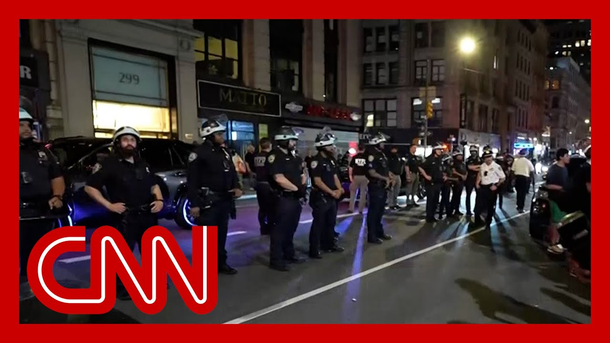

【全美多地爆发抗议活动反对ICE突袭行动】
Summary: The city is reeling from a sixth straight day of clashes over President Trump's ICE raids, with protests spreading to New York, Texas, and North Carolina.
摘要： 该市因特朗普总统的ICE突袭行动已连续第六天爆发冲突，抗议活动蔓延至纽约、得克萨斯和北卡罗来纳州。

⏱️ Estimated Reading Time: 16 min
📚 六级生词 📚 雅思生词 📚 托福生词 📚 专八生词 📚 SAT生词 📚 考研生词 📚 GRE生词 📚 高考生词
The city is reeling from a sixth straight day of clashes over President Trump's Ice raids.
该市因特朗普总统的ICE突袭行动已连续第六天爆发冲突。
Just moments ago, the LAPD declared an unlawful pr outside of City Hall.
就在不久前，洛杉矶警察局宣布市政厅外的集会为非法活动。
Now remember, about 2000 National Guard members are on the ground in Los Angeles with another 2000 on the way.
目前约有2000名国民警卫队成员已抵达洛杉矶，另有2000名正在途中。
Right now, we are seeing similar protests picking up steam again across the United States in New York, Texas and North Carolina as well.
目前，类似的抗议活动正在纽约、得克萨斯和北卡罗来纳州等地再次升温。
But let's get straight to CNN's What who is live outside of City Hall in LA.
现在让我们直接连线CNN的记者，他正在洛杉矶市政厅外进行现场报道。
Nick, what are you seeing there?
尼克，你那边情况如何？
Well, Abbie, what has happened is the police have moved the pro away from City Hall.
艾比，警方已将抗议者从市政厅驱离。
Police officers mounted on horse with batons raised, moved the protesters up into this little park where they are now.
骑警手持警棍，将抗议者驱赶至现在所在的这个小公园。
The protesters are carrying sign Get inside of L.A.. Get the troops out of L.A..
抗议者举着标语：“让军队滚出洛杉矶”。
They've been chanting at the pol Shame, shame, shame, shame.
他们高喊口号：“可耻，可耻，可耻”。
Look, we're seeing another phala of police officers coming up her armed with non-lethal, less lethal weapons, moving in to try I suppose, disperse what they call an unlawful gathe
看，又一队警察手持非致命武器逼近，试图驱散他们所称的非法集会。
Now, I've also seen signs amongst the protesters saying protesting is not illegal but clearly they do not want the protesters that close to City Hall again, important to note these are all These are not National Guard.
抗议者举着“抗议不违法”的标语，但警方显然不希望他们再次靠近市政厅。需注意，这些是当地警察，而非国民警卫队。
These are not federal. These are local Los Angeles poli
这些不是联邦人员，而是洛杉矶当地警察。
And right now they have the prot pegged up there.
目前抗议者被限制在原地。
Now, as you mentioned, the, curfew is due to kick in 8 p.m. local time.
如你所言，当地宵禁将于晚上8点开始。
That's 11 p.m. on the East coast
即东海岸时间晚上11点。
What we saw last night when the when the curfew kicked was the LAPD. Very methodically, very slowly moved in and did begin making ar
昨晚宵禁生效时，洛杉矶警方有条不紊地推进并开始逮捕。
They. Yeah. Yeah. Yeah. Okay okay okay okay okay.
他们……好的，好的。
So the police are asking us now to move even further back.
警方现在要求我们继续后退。
They've been this has been a con all day of them moving us out of so let's just come back down here just a little bit.
他们整天都在驱赶我们，我们再后退一点。
so as you see, we're now shooting straight into the sun, so it's very difficult for you to see what's going on here, Abb
如你所见，我们现在正对着阳光拍摄，画面很难看清。
But right now, more LAPD officer just massing, facing off against these protest
但目前更多洛杉矶警察集结，与抗议者对峙。
So far today, the protests have been pretty calm.
今天的抗议活动总体平静。
There has not been violence.
未发生暴力事件。
the police are clearly getting a little anxious.
警方显然有些紧张。
I just saw a police officer about five minutes ago when we were walking up here.
五分钟前我们走过来时，我看到一名警察。
There was a man on a bicycle who went under a police line.
一名骑自行车的男子越过警戒线。
Not in a threatening manner.
并无威胁举动。
The police officer pulled him of the bicycle, threw him to the gr
警察将他拽下自行车并摔倒在地。
As you can see up here, Jerry, we've got more, police vehicles waiting, more officers waiting s
杰瑞，如你所见，更多警车和警察正在待命。
I mean, okay, we've listened to everything that you've said, oka
我们已听取所有指示。
We've listened to everything you
我们已按你们的要求行动。
Okay. So again, the police don't appear to know where they want us to be because they keep on telling us
警方似乎也不确定该让我们退到哪里。
Just another sign of just the kind of anxiety levels that have risen here.
这再次表明紧张情绪正在升级。
This whole phalanx is now moving as we are getting pushed further
整个警察方阵正在推进，我们被进一步驱离。
There's no point in arguing with the police at this we'll just do what we're told and stand back here.
此时与警方争辩无意义，我们只能服从指令退后。
So, yeah, Abby, basically we're just waiting to see what happens here.
艾比，我们现在只能静观其变。
It seems like a face off.
局势如同对峙。
There are police officers on foo on horseback, just facing up against the prote
警察徒步或骑马，与抗议者正面对峙。
Back to you.
交还给你。
All right, Nick, we'll we'll keep an eye on that, and we'll be back to you this ho
好的尼克，我们会持续关注，稍后继续连线。
Let's go now to New York City, where CNN Sherman preoccupies.
现在转向纽约市，CNN的谢尔曼正在现场。
Is downtown Sherman. What's happening tonight?
谢尔曼，今晚市中心情况如何？
Last night was a bit of a scene, as you were in the middle of these protests.
昨晚你身处抗议中心，场面混乱。
How are things going today?
今天情况怎样？
It's not as, let's say there isn't as much chaos tonigh but there certainly are pockets
今晚混乱程度有所减轻，但仍有零星冲突。
And we're sort of in the same er we were last night with.
我们大致处于昨晚相同位置。
You were just on the other side now on Broadway.
你现在位于百老汇另一侧。
And I just want to show you what's happening.
我想向你展示现场情况。
I mean, we've been out here now for about five hours.
我们已在此处停留约五小时。
These are the NYPD officers. they've been out here just as long as we've been out h
这些纽约警察与我们同时在此值守。
And now, basically, what's been happening?
目前情况如何？
When have you turn around here and show you there are some protesters that still remain?
转身可以看到仍有部分抗议者滞留。
This is a very, very much a smaller group than what we saw earlier tonight
规模远小于今晚早些时候。
They have now essentially just stopped here on the sidewal
他们现在基本停留在人行道上。
and kind of sometimes a confront with police at times trying to abate the police.
时而与警察发生小规模对峙。
And then the police would come i onto the sidewalk and threaten and arrest.
警察会走上人行道威胁逮捕。
And then it's actually been remarkable to watch as the bosses, the white shirt, the Chiefs and the lieutenants and the captains move in and try to de-escalate.
值得关注的是，高阶警官们介入试图缓和局势。
Tell the officers, move back, le
命令警员后退。
Let's move out and make sure that they don't make an arrest and they want to de-escalate.
撤离现场以避免逮捕，旨在降级冲突。
And that's kind of in the back and forth here tonig
这就是今晚的拉锯战。
as we were out here last night, where this area is so significan
昨晚我们也在现场，该区域意义重大。
because this is where the Ice offices are, the New York City Ice offices, this is where they detain people that they take into custo
此处是纽约ICE办公室所在地，被拘留者关押于此。
And what happened earlier was one of the vans came
早些时候一辆囚车驶来。
It was empty, but they didn't know that it's a prisoner van.
车内无人，但抗议者不知是囚车。
And the group started chasing after the van.
人群开始追赶车辆。
And then the NYPD moved in and the van wound up leaving.
纽约警方介入后囚车最终离开。
But that's been kind of what's been happening here over the course of the past seve
过去几天大致如此。
But for now, we're just at this standoff here.
目前处于僵持状态。
The police are allowing them to remain on the sidewalk, and we'll see at some point they're going to have to leave.
警方暂容他们留在人行道，但最终需撤离。
as we saw last night. So let's see how this develops here as we
如昨晚所见，我们继续观察进展。
All right, Shimon, thank you very much for that rep
好的谢尔曼，感谢报道。
We'll be back with you as well as the night continues.
夜间进展将继续跟进。
Tonight's curfew impacts a very small pocket of downtown Los Angeles, where the protests have been concentrated all week.
今晚宵禁仅影响洛杉矶市中心小片区域，整周抗议集中于此。
But that didn't stop President Trump from once again painting the situation in a very different light.
但特朗普总统再次扭曲事实。
I'm very proud to have helped Los Angeles survive Los Angeles right now.
我自豪于拯救洛杉矶免于毁灭。
If we didn't do what we did, would be burning to the ground.
若非我们行动，整城将焚毁。
And that's not over yet.
危机尚未结束。
That was the president earlier t as he entered the Kennedy Center for a performance.
这是总统稍早前往肯尼迪中心时的发言。
Meanwhile, la mayor Karen Bass is pushing back strongly on that.
洛杉矶市长凯伦·巴斯强烈反驳。
The curfew that we put in place yesterday is about six square miles of a city that is 5
宵禁仅覆盖500平方英里城市中的6平方英里。
So the portrayal is, is that all of our cities are in ch
有人渲染全城陷入混乱。
Rioting is happening everywhere. And it is a lie.
称暴乱四处蔓延，纯属谎言。
All right. We're here in the studio with ou
现在回到演播室。
I mean, Bakari, there there is that Trump wants to take credit
巴卡里，特朗普试图揽功。
Nothing really happening. except for, protests and arrests
实际仅有抗议和逮捕。
But the reality is that, you kno what's been going on in Los Ange is largely due to law enforcemen
但洛杉矶局势主要归因于当地警方。
LAPD, they've been doing their j the military is not even there.
洛杉矶警方履职，军方并未介入。
Really. They're not doing anythi
军方确实未参与。
According to the police chief who spoke to CNN tonight.
据今晚CNN采访的警察局长所述。
I think what you see tonight is a collaborative effort by the NYPD and the LAPD in tryi
今晚所见是纽约与洛杉矶警方的协作努力。
to make sure that they allow these protesters to have their voices heard, that there's no violence, that there's no looting, that they're confined to one particular area.
既让抗议者发声，又避免暴力和抢劫，将其限制在特定区域。
And then when the protest time has reached its maximum conclusi
当抗议时限届满。
they go home and disperse.
人群将自行解散。
And so in LA, you're talking abo since June 6th, there have been 330 noncitizens
自6月6日以来，洛杉矶有330名非公民被捕。
Only about 113 people had criminal records.
仅约113人有犯罪记录。
And so the protest that you're h the voices that you're hearing from people or about those mothers or about those children, about those people who make our lives run every single day, who are not cr
抗议者声援那些无犯罪记录的劳动者、母亲和儿童。
because no one will sit up here and tell you that if you committed a crime, you shouldn't be deported.
无人会主张犯罪者不应被遣返。
But those individuals who are part of the fabric of ou
但这些人是社会组成部分。
and this is Trump's America, and that's what we're seeing.
这就是特朗普治下的美国现状。
And one of the things that I want to hear from my Republican colleagues is, look, Trump is talking about Ice raids in Philadelphia next, and Detroit next in Chicago next
希望共和党同僚回应：特朗普宣称将突袭费城、底特律和芝加哥。
But what about those plants that are bringing in illegal immigrants in Arkansa
但阿肯色州雇佣非法移民的工厂呢？
What about those plants in South with Governor Henry McMaster or those agricultural facilities in Brian Kemp's Georgia?
南卡罗来纳州州长亨利·麦克马斯特辖下工厂？佐治亚州州长布莱恩·肯普的农业设施？
I mean, are we really cracking down on immigration or illegal immigration, or are you trying to pit Americans against each other?
这究竟是打击非法移民，还是煽动美国人内斗？
Because that's what we're seeing
现实正是如此。
It's black versus brown. It's immigrant versus citizen. It's East versus West.
黑人对抗拉丁裔，移民对抗公民，东西部对立。
This is Donald Trump's America. And I think people are fighting against that Republican friend going to answer the card. You are the friend. I was just w
这就是特朗普的美国，民众正在反抗。
Well, first of all, you know, when you hear that they're going after these facilities in Georgi
首先，听闻他们将突袭佐治亚州设施时——
and they're not they're not or these farmers or these big corporate farmers, people don't realize that of all the undocumented pop in America today, what percent is in agriculture?
人们未意识到当今美国无证移民中农业从业者比例。
Do you know that, Bakari?
巴卡里你知道吗？
Tell me, how did you get 4%?
你说4%？依据何在？
4%? Not too many qualified, but okay
4%？数据存疑，但好吧。
Yeah, I've been in Manhattan here for a couple of days. I don't see any farms here.
我在曼哈顿数日未见农场。
I don't see any farms in Philade
费城也没有。
I don't see any farms in downtow
市中心更无农场。
So the concentration of undocume people are in big cities.
无证移民集中于大城市。
They're in Los Angeles, they're in Chicago.
洛杉矶、芝加哥等地。
And to see President Trump, fran he just doesn't trust Gavin Newsom to do a good job.
显然特朗普不信任加州州长加文·纽瑟姆。
And that's why he sent the National Guard.
故派遣国民警卫队。
I don't know that it's, I mean, I'm sure he doesn't trust Gavin News
我确信他不信任纽瑟姆。
but it also seems like an attempt to make Californ a symbol of an attempt to kind of go after the liberal establishment.
但亦有将加州塑造成打击自由派象征的意图。
Yeah, but this is a pattern we have seen over and over and over again.
这是其惯用手段。
Let's go after Harvard. Let's go after Cal, a blue city, blue state.
针对哈佛、加州等蓝州象征。
We're basically he's saying he doesn't trust the LAPD
他实则在质疑洛杉矶警方能力。
Let's be very clear. And I think they did it having been in L.A. during the 92 riots, they did an excellent job.
明确地说，洛杉矶警方在1992年骚乱中表现出色。
I think he does last night. Newsom. Karen, I think you can have that right now.
纽瑟姆和巴斯市长当前处理得当。
I'm going to say my opinion, which is part of I think it's important to rememb
需记住关键一点：
part of the reason that we're he what I was saying is because Donald Trump misled the American people.
特朗普误导了民众。
He said during the campaign it was going to be about violent criminals who.
他竞选时宣称只针对暴力罪犯。
No, no, no, I mean finish.
不，请让我说完。
We are seeing people come out all over the country.
全国民众正在反抗。
We saw a group of, frankly, Trum
甚至特朗普支持者也在抗议——
when a waitress in Minnesota who part of the community been there for 15 years be taken in by Ice.
明尼苏达州一名服务社区15年的女侍被ICE逮捕。
And the community said, wait a s
社区质疑：
She's not a violent criminal. She's here.
她非暴力罪犯，一直安居于此。
I was at Trump, but that's what
我曾支持特朗普，但这就是现实。
He told us what should be said, and he's doing, and I should be in the halls of Washin
他言行不一，我本应在国会抗议。
protesting the Congress. People who haven't done their jo
谴责失职的议员。
But, you know, I agree that publicans and Democ have not done their job.
两党均未尽责。
How about throwing rocks at police officers because Congress hasn't done their job well?
向警察扔石头怎么样，因为国会没有做好他们的工作？
How about well, Congress had an opportunity to d last year.
那么，国会去年曾有机会……
Who said walk away from the deal that was done.
是谁说放弃已经达成的协议。
That was an amnes
那是一种遗忘